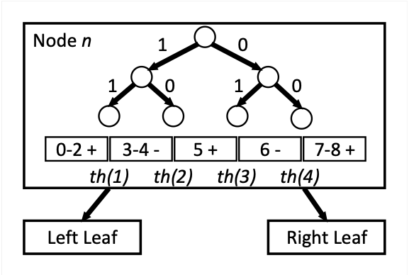

- 0-1 変数は行数によらない深さ \(K\) の木で高々 \(2^K(F + C + \log T_{\max})\) 個。4,435 行の Statlog-satellite でも、深さ 4 の問題（学習データは半分）の 0-1 変数は 741 個だった。
- 計算時間は 10 分比べた OCT の論文は 1 問に 30 分〜2 時間、DTIP は最大 30 分を使っていた。BinOCT は CPLEX 12.8 で 10 分で打ち切った。
- 深さ 2 で 9 データが最適16 データのうち 9 データで、学習データ上の最適な木を得て最適性も示した。Iris と Wine では深さ 4 でも最適だった。
既存の整数計画の定式化は、学習データの 1 行ごとに変数と制約を作る
深さを決めた最適な決定木を求める問題は NP 困難で（Hyafil & Rivest 1976）、ふだんは CART のような貪欲法で準最適な木を作る。近年は数理最適化のソルバーで木を学習する研究が増えた。この論文が直接比べるのは、OCT（Bertsimas & Dunn 2017）と、著者ら自身の DTIP（Verwer & Zhang 2017）である。
どちらの定式化も、各行がどの葉に入るかを行ごとの変数で表す。整数変数の数は OCT で \(O(R \cdot 2^K)\)、DTIP で \(O(R \cdot K)\) で（\(R\) は行数、\(K\) は木の深さ）、制約も行数に比例して増える。そのため、データが大きくなると解く時間が急に延びる。BinOCT は、目的は同じく学習データでの誤分類の最小化のまま、問題の大きさが行数にできるだけ依存しない定式化を目指す。
しきい値の候補が T 個なら、二分探索の形に並べた log₂T 個の 0-1 変数で 1 つを選ぶ
特徴量の値を並べ、隣り合う値の間をしきい値の候補にする。ただし両側の行がすべて同じクラスなら、そこで分ける理由がないので候補から外す。論文の例 1 では 0〜8 の 9 つの値に対してクラスが + + + − − + − + + と並び、候補は 8 個から 4 個（\(th(1), \dots, th(4)\)）に減る。多変量のデータでは、外した候補が最適な木に必要になることも理論上はありうるが、論文は問題を小さくするために採用している。
候補 1 つに 0-1 変数を 1 つ割り当てると、4 個の候補に 4 変数が要る。BinOCT は候補を二分探索木の葉に並べ、\(\log_2 4 = 2\) 個の変数 \(t_{n,1}, t_{n,2}\) で 1 つを選ぶ（図1）。\(t_{n,1}\) が候補を半分に絞り、\(t_{n,2}\) が残りの半分のどちらかを選ぶ。\(t_{n,1} = 1\) なら、しきい値は \(th(1)\) か \(th(2)\) なので、値が \(th(2)\) より大きい行は左の葉に入れない。この関係を、範囲ごとの行の和にかける big-M の制約で書く。
\(l_{r,i}\) は行 \(r\) が葉 \(i\) に入るかを表し、\(ll(n)\) はノード \(n\) の左の枝の下にある葉の集合である。\(t_{n,1} = 1\) のとき、この範囲の行はすべて左の葉に入れなくなる。同じ形の制約を \(t_{n,1}\) の右側と、\(t_{n,2}\) が受け持つ範囲についても作ると、2 つの変数の 4 通りの値が 4 つのしきい値にちょうど対応する。下の図で試せる。
論文の例 1・例 2 の 9 行（値 0〜8、クラスは + と −）。青い枠が左の葉に入る行で、ほかは右の葉に入る。値 0〜2 の行は必ず左、7〜8 の行は必ず右に入る（別の制約で扱う）。

同じ範囲に入る行の制約を big-M で 1 本に足し合わせ、行の変数は連続変数のままにする
しきい値が二値なら、行 \(r\) が左右どちらの葉に入るかは 1 行につき 1 本の制約で書ける。それでは制約が行数だけ増えるので、論文は同じ条件で向きが決まる行の制約を足し合わせ、1 本の big-M の制約にする。big-M の定式化はソルバーにとって扱いにくいことが知られているが、論文は行ごとに制約を作るよりずっと速く解けたと報告している。\(M\) にはその範囲の行数を使い、範囲が狭い制約ほど \(M\) は小さい。
行の変数 \(l_{r,l}\) は本来 0 か 1 だが、制約によって 0 か 1 の値に決まるので連続変数として扱える。連続変数は分枝限定法で分枝しなくてよいので、問題はずっと易しくなる。複数の特徴量からの選択は、ノードが特徴量 \(f\) を使うかを表す 0-1 変数 \(f_{n,f}\) にもう 1 つの big-M をかけて表す。目的関数も同じ葉に入る同じクラスの行をまとめた制約で葉ごと・クラスごとの誤分類の数 \(e_{l,c}\) を数え、その和を最小にする。
0-1 変数の数は木の深さ、特徴量とクラスの数、しきい値の候補の数の対数で決まり、行数によらない
0-1 変数は、ノードの特徴量 \(f_{n,f}\)（高々 \(N \cdot F\) 個）、しきい値のビット \(t_{n,t}\)（高々 \(N \cdot \log T_{\max}\) 個）、葉の予測クラス \(p_{l,c}\)（高々 \(L \cdot C\) 個）だけである。\(N = 2^K - 1\) は分岐ノードの数、\(L = 2^K\) は葉の数、\(F\) は特徴量の数、\(C\) はクラスの数である。制約は高々 \(N + R + L + 2NFT + LC\) 本で、ここには行数 \(R\) が線形に残る。
| 手法 | 決定変数の数 | 制約の数 |
|---|---|---|
| BinOCT | \(O(2^K(F + C + \log T_{\max}))\) | \(O(R + 2^K(F \cdot T_{\mathrm{all}} + C))\) |
| DTIP | \(O(R \cdot K)\) | \(O(R \cdot 2^{K-1})\) |
| OCT | \(O(R \cdot 2^K)\) | \(O(2^{K-1}(R \cdot K + C))\) |
表1 決定変数と制約の数（論文 Table 2）。\(T_{\max}\) は特徴量ごとのしきい値の候補の数の最大、\(T_{\mathrm{all}}\) は全特徴量の候補の総数。
CPLEX が報告した深さ 4 の問題の大きさ（学習データは全体の 50%）は、Balance-scale で 0-1 変数 153 個、Car で 184 個、Iris で 183 個、Statlog-satellite で 741 個だった。数千行のデータでも 0-1 変数は数百個で済む。一方、Statlog-satellite の制約は 65,284 本あった。
10 分の計算で、深さ 2 と 3 では OCT や CART より高い精度を得ることが多く、深さ 4 では学習データへの過学習が目立った
UCI の 16 データ（124〜4,601 行、特徴量 4〜57 個）を使い、OCT の論文と同じく学習 50%、テスト 25% に分けて 5 回繰り返した。BinOCT には調整するパラメータがないので、残りの 25% は使わない。比較相手の OCT と DTIP の精度は元の論文の値をそのまま使い、CART は scikit-learn の既定の設定で深さだけをそろえて学習した。CART の解を初期解にして解いたものを BinOCT* と呼ぶ。CPLEX には根に近い変数から分枝するよう優先順位を与えた。
学習データでは、BinOCT はほぼ常に CART より精度が高かった。Statlog-satellite の深さ 3 と 4 は 10 分では解ききれず、深さ 4 では初期解のある BinOCT* のほうが良かった。テストデータでは、深さ 2 で BinOCT が OCT を上回ったのは 15 データ中 11 データで（解説者が論文の Table 6 から数えた。Bank marketing は OCT の値がない）、Monks-1 では 80.0% と OCT の 67.7% を大きく上回った。
深さ 4 では、BinOCT の学習データでの精度はつねに CART より高いのに、テストデータでは CART に負けることが多かった（BinOCT は 16 データ中 10 データで CART より低い。解説者が Table 6 から数えた）。論文は、精度だけを最大にする BinOCT は過学習しており、CART と OCT は精度と木の複雑さのトレードオフをとっていると説明する。トレードオフが違えば目的関数が違い、解く問題も違うので、定式化の良し悪しの比較は難しいとも述べている。
OCT の規模の問題に、しきい値の符号化で 0-1 変数を減らす方向から答えた定式化
- 解く問題：深さ \(K\) を固定した完全な二分木で、学習データでの誤分類の数を最小にする。木の複雑さへの罰則はなく、論文は今後の課題に挙げている。
- 分岐：単変量。連続値の特徴量も二値化せず、しきい値の候補を 0-1 変数のビットで選ぶ。両側が同じクラスの候補は外す。
- 規模：0-1 変数は行数によらないが、制約は行数に比例して残る。論文は制約を減らすことや、行やしきい値の一部だけを使う近似を今後の課題に挙げている。
（解説者の注）Aghaei らはデータの流れとして木を表すフローの定式化で、BinOCT や OCT より LP 緩和が強いことを示した。動的計画法・分枝限定の系統（DL8.5、MurTree など）は、二値の特徴量を前提に、MIO より大きなデータを厳密に解く方向に進んでいる。
@inproceedings{verwer2019learning,
title = {Learning Optimal Classification Trees Using a Binary Linear Program Formulation},
author = {Verwer, Sicco and Zhang, Yingqian},
booktitle = {Proceedings of the AAAI Conference on Artificial Intelligence},
volume = {33},
number = {01},
pages = {1625--1632},
year = {2019},
doi = {10.1609/aaai.v33i01.33011624}
}
ページの数値と図は、Eindhoven University of Technology の機関リポジトリで公開されている PDF による（AAAI の出版社ページは自動取得できなかった）。書誌は Crossref で確認した。